Next: Applications Up: Matrix Arithmetic Previous: Elementary Matrices Contents Index
If we interchange any two rows of
 to get
to get  and then interchange the same rows of
and then interchange the same rows of  , we
will obviously obtain
, we
will obviously obtain
 again. Since
again. Since  is an elementary matrix of type (1), this means that
. Obviously
is an elementary matrix of type (1), this means that
. Obviously  of type (1) is its own inverse.
of type (1) is its own inverse.
An elementary matrix  of type (2) is identical to
of type (2) is identical to
 except that
except that  for exactly one index
value
for exactly one index
value  and for some scalar
and for some scalar  . Let us say that the inverse of a type (2)
. Let us say that the inverse of a type (2)  is equal to 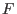
. This means that
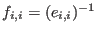
for all values of
is equal to 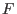
. This means that
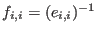
for all values of  . It is easy to show that
so that 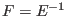
. This
also makes it easy to calculate
. It is easy to show that
so that 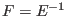
. This
also makes it easy to calculate  for a type (2) elementary matrix. An example of a type
(2) elementary matrix
and its inverse are given below.
for a type (2) elementary matrix. An example of a type
(2) elementary matrix
and its inverse are given below.
An elementary matrix of type (3)  is identical to
is identical to
 except that 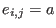
for some scalar 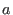
and
for one specific index value
except that 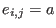
for some scalar 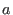
and
for one specific index value  and one specific index value
and one specific index value  and 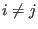
. We say that
and 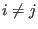
. We say that  has
one non-zero, off-diagonal entry. The diagonal
entries, 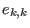
, are all equal
to one. All other entries are zero.
has
one non-zero, off-diagonal entry. The diagonal
entries, 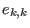
, are all equal
to one. All other entries are zero.
If we add a multiple of a row to another row and then subtract that multiple of a row from the same row,
the matrix is left unchanged. This simple fact allows us to generate the inverse for any type (3) elementary
matrix. Suppose  is a type (3) elementary matrix and
is the off-diagonal, non-zero entry,
and further suppose that
is the inverse of
is a type (3) elementary matrix and
is the off-diagonal, non-zero entry,
and further suppose that
is the inverse of  . Then
is equal to
. Then
is equal to  except for the one entry
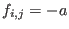
. An example of a type (3) elementary matrix
and its inverse are given below.
except for the one entry
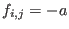
. An example of a type (3) elementary matrix
and its inverse are given below.

From the previous discussion we can see that all elementary matrices have inverses. We can also calculate them.
Recall that a matrix  can be put in reduced echelon form by applying a finite
series of row operations. Since multiplication by elementary matrices is the same
as row operations, we can write
can be put in reduced echelon form by applying a finite
series of row operations. Since multiplication by elementary matrices is the same
as row operations, we can write
where
Alternatively, suppose  is an identity matrix. This gives us
is an identity matrix. This gives us
Multiplying on the left of both sides of the equation, we have
Which collapses to
The product on the right of the equation is the product of the inverses of elementary matrices and we can easily show that the inverse of an elementary matrix is also an elementary matrix. Therefore, the product on the right is itself an invertible matrix, so
This theorem gives us a recipe (or algorithm) that will let us calculate the inverse of
of matrix because it shows that the same row operations that reduces a matrix  to
to
 will,
when applied to
will,
when applied to
 , change
, change
 into 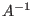
. It also shows that if
into 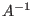
. It also shows that if  cannot be row reduced
into
cannot be row reduced
into
 , then
, then  has no inverse.
has no inverse.
The easy way to calculate the inverse of a matrix
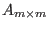
is to create a
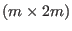
matrix
such that the left half is the matrix  and the right half is
and the right half is
 . Then apply row operations to this matrix
which will reduce
. Then apply row operations to this matrix
which will reduce  to
to
 . When this is done, the right half of the matrix will contain
.
. When this is done, the right half of the matrix will contain
.
For example, let us find the inverse of  when
when
Write the augmented matrix 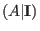 .
Interchange rows 1 and 2
Add 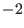 times row 1 to row 2
Add 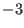 times row 1 to row 3
Multiply row 2 by 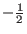
Multiply row 3 by 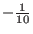

Add times row 2 to row 1
Add 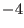 times row 3 to row 1
This shows us that

For a field
 , the binary operations of addition and multiplication
are the same as for integers except that the result is defined to be the remainder after
the absolute value of the result is divided by
, the binary operations of addition and multiplication
are the same as for integers except that the result is defined to be the remainder after
the absolute value of the result is divided by
 . (There are other ways of defining the integers that make up
. (There are other ways of defining the integers that make up
 .)
The number
.)
The number  is called the
modulus. The remainder is called a residue.
For example, in
, 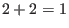
because
is called the
modulus. The remainder is called a residue.
For example, in
, 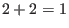
because  divided by
divided by  leaves
a remainder (or residue) of
leaves
a remainder (or residue) of  . Similarly,
. Similarly,  .3.1
.3.1
What would be the additive inverses for the scalars that make up ? What would be the multiplicative inverses?

have an inverse? (HINT: Row reduce
(HINT: Use Lamp and select the correct field.)

Then graph this matrix. A button will appear which will allow you to switch the columns you wish to graph. Close the graph and use row operations to put this matrix in reduced row echelon form. Graph the matrix after each row operation and observe the changes to the lines.
Graph this matrix. Switch between columns. Reduce the matrix to row reduced echelon form. Graph the matrix after each row operation. (NOTE: A plane which is on edge to the viewer is assumed to have zero thickness and is not drawn.)
Graph this matrix. Switch between columns. Reduce the matrix to row reduced echelon form. Graph the matrix after each row operation.